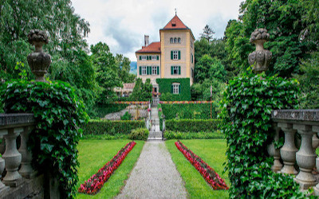
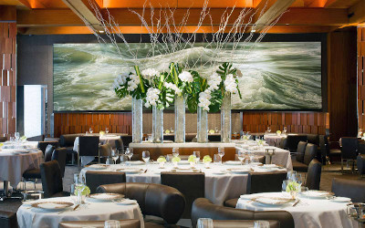
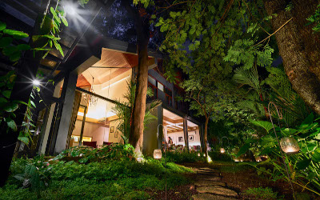
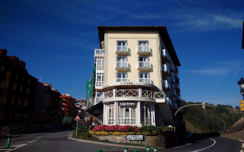

Schloss SchauensteinLocate in Fürstenau, Switzerland a Highly-touted restaurant by Andreas Caminada in a historical castle with seasonal tasting menu. |

Le Bernardinis a French seafood restaurant in Midtown Manhattan in New York City. Gilbert Le Coze and his sister Maguy Le Coze started the restaurant in Paris in 1972, where it was called Les Moines de St. Bernardin. They restarted the restaurant in New York in 1986, not long after receiving a third Michelin star. |

Suhringlocated in Bangkok, Thailand. Sühring is the first German fine dining restaurant in Bangkok, open since February 2016. It was quickly debuted as No. 13 in the 50 Best Restaurants in Asia, a list sponsored by S.Pellegrino and Acqua Panna. For Asia’s 50 Best Restaurants 2018 list, the restaurant was highly ranked at No. 4. |

ElkanoLocated in Getaria, Spain. Elkano is a family restaurant in Getaria, a fishing village on the Bay of Biscay some 15 miles west of San Sebastian. The history of the restaurant goes back as far as 1964, when Pedro Arregui opened a fish restaurant on the Calle Elkano Kalea in Getaria. |